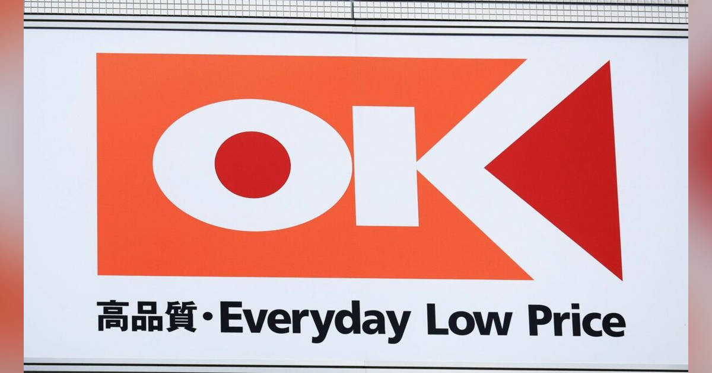
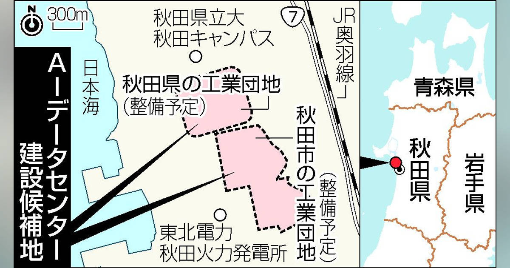
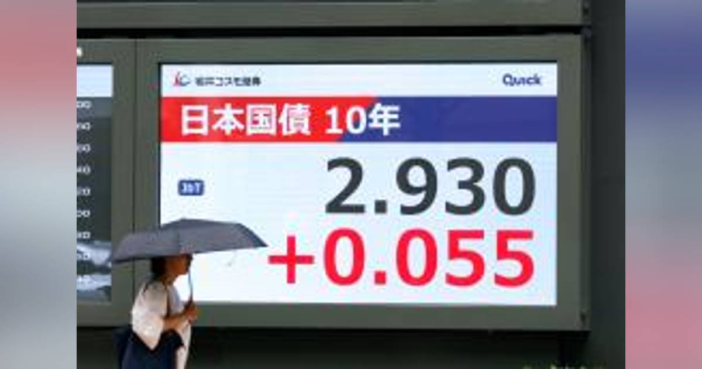
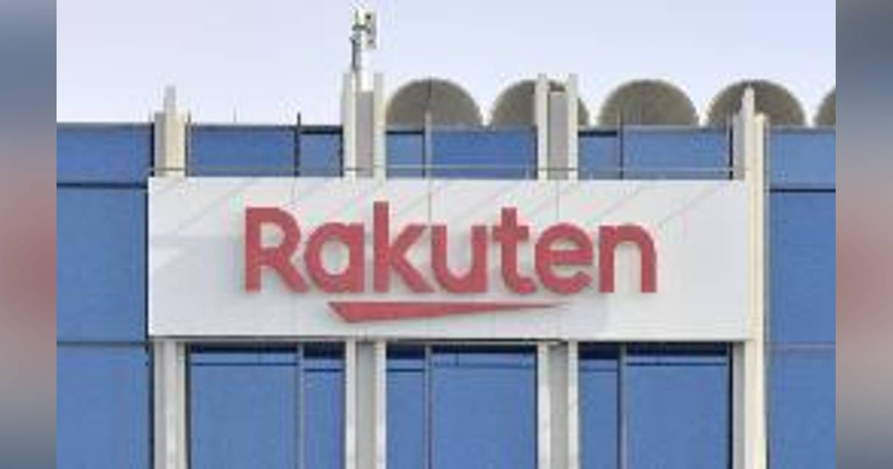

01
｢カインズ超え｣の巨大ホームセンター連合が誕生へ…それを仕掛けた｢ロピアでもオーケーでもないスーパー｣の正体
発行日時：2026年8月17日 05:00 JST ・ 東洋経済オンライン

あなたに関係ありそうな理由
地域の集客や生活者向けの企画を考える際、店舗面積、来店頻度、立地を別々でなく組み合わせて見る材料になるためです。
概要
中部を地盤とするスーパーマーケットのバローホールディングスと、ホームセンター大手のコーナン商事の資本業務提携を、単なる規模拡大ではなく、都市部へ出たい食品スーパーと、余る売り場を抱えるホームセンターの利害を交換する動きとして追った記事です。記事はまず、2025年11月に横浜郊外へ出店したバローの店舗が、翌年2月末までの100日間で26億5000万円を売り上げ、年商換算で96億8000万円に達したと紹介します。首都圏の一般的なスーパーの店舗年商が10億〜12億円、上位のオーケーやロピアでも40億〜43億円ほどという比較を置き、生鮮を強くした「デスティネーションストア」の集客力を示します。2026年6月末の提携では、両社が30億円ずつを出資し、共同運営やPB商品の相互供給を進める計画です。バロー傘下のアレンザHDにコーナンが49％を出資することで、コーナンの売上高5020億円とアレンザの1506億円を合わせた規模は、ホームセンター業界の首位相当になると記事は説明します。ただし、主眼はコーナンが首位を狙うことだけではありません。バローは関西・関東での出店加速を掲げ、都市部に多いコーナンの200店超を候補地として検討できるようになります。一方のコーナンは、人口減少、高齢化、集合住宅化で庭回りやDIY向けの需要が伸びにくくなり、在庫回転率の低下や過剰な売り場という課題を抱えるとされます。そこへ高頻度来店を生む生鮮スーパーを入れられれば、双方の集客と売り場効率を改善できる可能性があります。表示コメントでも、食品スーパーとホームセンターの来店時間・頻度が異なること、郊外店の余剰面積をどう活かすか、地域の既存店とどう差別化するかが論点になっていました。記事は、バローが関西で52店、売上750億円の店舗網をつくり、首都圏でも勝てることを検証してきたと位置づけます。今回の提携は、既存業態の面積を守ることより、売り場の構成を変えて来店動機をつくる試みでもあります。鮮魚や総菜で来店頻度を上げる食品スーパーと、DIY・日用品を扱うホームセンターの物流、人員配置、営業時間をどう調整するかが実行段階の試金石です。提携の成否は、出店数だけでなく、両業態の客層、商圏、オペレーションを実際に噛み合わせられるかで決まります。
仕事や会話で使える一言
提携の価値は規模よりも、片方の余剰ともう片方の不足を具体的に交換できるかにあります。
NewsPicks原文を読む
02
秋田に国内最大ＡＩデータセンター 整備費２兆円、企業・人材集積―洋上風力活用、国の支援も
発行日時：2026年8月17日 07:06 JST ・ 時事通信社

あなたに関係ありそうな理由
AI活用と地域プロジェクトを考える時、導入ツールだけでなく、電力、通信、資金、地域への還元まで見る視点が必要になるためです。
概要
秋田県で国内最大規模のAI向けデータセンターを建設する構想を伝える記事です。秋田市のサーバー管理会社エスツーと、米国のスタートアップであるビットグリットが主導し、整備費は2兆円規模、稼働開始は2030年以降を目指します。候補地は秋田市北部に整備予定の県・市の工業団地で、総受電容量は最大500メガワットを想定します。需要や拡張に応じて投資額が数兆円まで増える可能性にも記事は触れています。資金は両社が設ける特別目的会社を通じ、国内外の金融機関やファンドから募る計画で、アラブ首長国連邦の政府系ファンドも関心を示しているとされます。必要な膨大な電力については、秋田県沖で整備が進む洋上風力発電など再生可能エネルギーからの供給を見込んでいます。県が国のGX戦略地域に選ばれれば、送電など電力インフラの整備に国の支援を受けられる可能性があります。構想の狙いは、建物やサーバーを置くだけではありません。通信インフラの整備を足掛かりに、自動運転やドローン関連企業の誘致、AIスタートアップへの低価格なサーバー提供、大学と連携した研究開発や人材育成につなげたいという考えが示されています。ただ、投資額が大きいことと、地域に持続的な価値が残ることは同じではありません。表示コメントでは、データセンターの稼働後の雇用は限られ得ること、電力網や道路・通信への負担を地域が長く抱える可能性、2030年以降のAI用ハードウェアや冷却技術の変化をどう織り込むかが指摘されました。記事は19日にUAEの駐日大使らが秋田を訪れ、投資計画や地域産業振興について知事、市長らと意見を交わす見通しだと伝えます。関心表明が実際の資金提供、送電網の整備、利用企業との長期契約へ進むかが次の確認点です。大規模な計算資源を地方に置く意味は、建物の完成時ではなく、周辺の事業者と研究者が利用を継続できる仕組みをつくれるかで測るべきです。データセンターは計算資源を支える基盤ですが、利用者を確保できるか、設備更新を続けられるか、利益や技術が地域にどれだけ残るかまで設計しなければ、巨大な建設投資だけでは地域集積を保証しません。今後は、資金調達、電力の確保、具体的な利用者、地域還元の条件を追う必要があります。
仕事や会話で使える一言
AIインフラは、建設費よりも、電力・利用者・地域還元を長く回せる設計が問われます。
NewsPicks原文を読む
03
実質ＧＤＰ、年１．１％増 ３期連続プラス、原油輸入減―４～６月期
発行日時：2026年8月17日 09:53 JST ・ 時事通信社
あなたに関係ありそうな理由
景況感、個人消費、設備投資のズレを読むことは、事業の予算や生活者向けの企画を現実に合わせる基礎になるためです。
概要
内閣府が発表した2026年4〜6月期の国内総生産速報について、実質GDPが前期比0.3％増、年率換算で1.1％増となり、3四半期連続のプラス成長だったことを伝える記事です。表面上はプラス成長でも、内訳を見ると力強い内需拡大とは言い切れない構図が見えてきます。中東情勢の緊迫化後に原油輸入が減ったことが、輸入の減少を通じてGDPを押し上げた面があります。政府最終消費支出は1.6％増となった一方、民間最終消費支出は0.02％減で、8四半期ぶりのマイナスです。記事は、たばこ価格の上昇による買い控えや、前年にあった暖房需要の反動を背景に挙げています。自動車をめぐる税制変更や、省エネ基準の変更前にエアコンを買う動きは消費を支えましたが、全体を押し上げるほどではありませんでした。民間設備投資も1.2％減と、2四半期連続のマイナスです。公共投資は0.1％減でした。つまり、企業の投資意欲と家計の消費という民間需要が揃って伸びた結果ではなく、輸入減と政府支出が成長率に大きく関わった四半期です。GDPは国内で生み出された付加価値を測る指標ですが、輸入が減れば算式上は成長率を押し上げます。そのため、数字だけを見て景気が改善したと即断するのは危険です。表示コメントでも、輸入減や在庫などの要因と、実際の家計・企業の手触りを分けて見るべきだという意見が出ていました。反対に、輸出や政府支出が下支えし、マクロでは持ちこたえているという評価もあります。原油輸入の減少は、燃料価格や供給不安に直面した経済の強さそのものを示すわけではありません。民間需要の弱さが続くなら、輸入減による一時的な押し上げと、国内の所得・投資が増える持続的な成長を区別する必要があります。消費の細かな落ち込みが一時的なのか、物価負担や先行き不安によるものなのかも、次の統計で確かめるべき点です。今後注目すべきは、実質賃金の動きが消費にどう反映されるか、設備投資が再び増えるか、原油価格や中東情勢による輸入額の変化が続くかです。雇用と賃金の分配を含めて見ることが重要です。景気の判断では、年率換算の見出しだけでなく、個人消費と設備投資の中身を確認する必要があります。
仕事や会話で使える一言
GDPが伸びても、家計の消費と企業の設備投資が弱ければ、現場の景況感は別に確かめる必要があります。
NewsPicks原文を読む
04
長期金利、一時２・９３０％ ２９年１０カ月ぶり高水準
発行日時：2026年8月17日 10:36 JST ・ 共同通信

あなたに関係ありそうな理由
金利は住宅ローン、企業の資金調達、公共投資、為替を通じて、家計や事業環境に広く影響するためです。
概要
国内の長期金利の代表的な指標である新発10年国債利回りが、17日の債券市場で一時2.930％まで上昇し、1996年10月以来29年10カ月ぶりの高水準となったことを伝える記事です。前週末からの上昇幅は0.055％で、利回りは心理的な節目とされる3％に近づきました。国債の利回りは価格と逆方向に動くため、この日の動きは国債が売られたことを意味します。記事が挙げる背景は複数あります。市場では日銀が早期に政策金利を引き上げるとの見方が広がり、米国の長期金利上昇も国内金利の押し上げ要因になりました。急速な円安を是正するための協調介入を受け、日銀が9月に利上げへ動くとの見方も出ているといいます。一方で、財政出動への期待や、海外の金融政策の発言が債券需給に影響する可能性も伝えられています。長期金利の上昇は、ただちにすべての貸出金利が同じ幅で上がるという意味ではありません。それでも住宅ローンの固定金利、企業が長期資金を調達するコスト、国の利払い負担、株式や不動産の評価に時間差で波及し得ます。金利が低いことを前提に成り立っていた投資・借り入れの判断は、見直しを迫られる可能性があります。表示コメントでは、約30年続いたデフレからの脱却として金利のある世界へ戻る動きと見る声がある一方、成長が十分でない段階の利上げが家計や企業の負担を増やさないかという懸念もありました。とりわけ国債金利は、政府の財政への信認と将来の物価・金融政策の見通しが交差する価格です。利回りが上がる理由を、景気改善への期待だけでなく、国債を保有する投資家がどの程度の利回りを求め始めたのかという需給の変化からも見る必要があります。市場の想定が速く動けば、固定金利と変動金利のどちらを選ぶか、設備投資の回収期間をどう置くかという実務判断にも影響が及びます。変化の速度にも注意が必要です。重要なのは、2.930％という一点だけでなく、上昇が日銀の政策観測、海外金利、財政への見方のどれに主に反応したのかを見分けることです。9月の日銀判断、為替、国債入札の需要を追うと、上昇が一時的なものか、より長い局面の変化かを判断しやすくなります。こうした複数の要因を分けて読む視点が必要です。
仕事や会話で使える一言
金利上昇は市場の数字ではなく、借り入れ・投資・為替の前提が変わるサインです。
NewsPicks原文を読む
05
楽天、迎撃用ドローンで提携 ドイツ新興と、防衛省納入狙う
発行日時：2026年8月17日 14:48 JST ・ 共同通信

あなたに関係ありそうな理由
AIを含む民生技術が防衛分野へ入る時、事業機会だけでなく、調達、責任、運用の線引きを考える必要があるためです。
概要
楽天グループが、ドイツの防衛テック企業ヘルシングと提携し、飛来するミサイルなどを迎撃する用途のドローンを日本の防衛省へ納入することを目指すと伝える記事です。楽天はヘルシングのドローンを日本へ導入する際の窓口となり、将来は国内で量産する可能性も視野に入れます。記事によれば、陸上自衛隊は無人機を含む装備品の実証を進めており、9月下旬までに採用の可否を判断する計画です。沿岸部への上陸を想定した抑止力の強化につなげる狙いがあるとされます。楽天が軍事用途の機器を扱うのは初めてです。同社はこれまで、ドローンの操縦訓練、機体開発、建物外壁の点検などに取り組んできましたが、防衛省への納入支援という領域に踏み出します。ヘルシングは2021年に設立され、AIを活用した自律システムの設計を手がける新興企業です。この提携は、通信、AI、無人機といった民生でも使われる技術が、防衛調達と結び付く例として重要です。国内での量産まで進めば、海外製品を導入するだけでなく、サプライチェーン、整備、人材育成、輸出管理を含む産業基盤にも関わります。一方、記事の段階では防衛省による採用は決まっておらず、量産の時期や規模も具体化していません。表示コメントでは、海外技術を取り込む窓口を日本企業が担う意味、国内の防衛生産基盤をどう整えるかという期待と、自律的に動く兵器の責任や倫理をどう管理するかという懸念が併存していました。また、飛来物を迎撃する無人機は、平時の点検や物流向けドローンとは異なり、誤認、通信妨害、部品供給の途絶といった状況でも安全に運用できるかが重要になります。防衛省の実証で何を評価し、どこまで国内で整備・修理できる体制にするのかも、採用後の実効性を左右します。民間企業が防衛需要に参入する時の説明責任は、技術の先進性だけでなく、利用者、従業員、取引先に対する情報公開のあり方にも及びます。この点を含め、ドローンの性能だけでなく、最終判断を誰が担うのか、実戦での運用ルールをどう検証するのかが問われます。今後は実証の結果、国内生産の範囲、AIの自律性に関する統制、楽天が防衛分野で担う役割の説明を確認する必要があります。
仕事や会話で使える一言
防衛テックは性能競争だけでなく、導入後の責任と統制を設計して初めて社会実装になります。
NewsPicks原文を読む